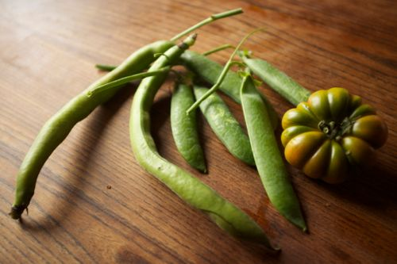

Signs of Spring

Fava beans, peas and tomato (it’s also good when green).
The other morning I woke up and made coffee to the sounds of the rondini, or swifts. Their high-pitched noises come in waves; it goes out and comes back, and the effect is enhanced by their flight around and around. Between our jutting-up apartment, the hotel on Capo D’Africa and the medieval brick church of Santi Quattro Incoronati the swifts fly in circles. They pull back just before they hit each wall, a game of chicken on every turn. The rondini will fly like this every morning until early summer. They are signs of the heat to come. For this and their crazy, fascinating flight, I’m happy to see them each year.
The other signs of warmth that I love are on the table of my fruit and vegetable sellers (three of the same family: dad, daughter and uncle). They come from Velletri and set their goods on the table in crates: spring peas, asparagus, strawberries, fava beans, string beans. In the spring I tend to fill up my baskets with more vegetables than I could possibly eat. They are both beautiful, smelling of the earth and of their own flavors, and fresh. The peas are my favorite. I eat them right out of the pod as I shuck. And then the string beans that remind me of bending in the fields, picking them and hating every moment of it.
The last sign of spring I try to savor are the leaves, their fragile transparence and the special green that is a color and a light. Take a new leaf and bend it. It won’t break.
· · · · · · · · · · · · · · · · · · · ·